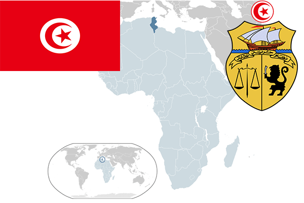

To`liq nomi: Tunis Respublikasi
Region: Shimoliy Afrika
Qonunchilik shakli: Respublika
Mustaqillik kuni: 20 mart 1956-yil
Poytaxt: Tunis
Maydoni: 163,610 km²
Chegaradosh davlatlari: Jazoir, Liviya
Aholisi: 10 982 476 (2014-yil)
Aholi zichligi: 61,6 /км²
Aholining o`rtacha yoshi: 74,24 yil
Rasmiy tili: Arab tili
Dini: Islom
Pul birligi: Tunis dinori
Telefon prefiksi: +216
Internet domen: .tn
Xalqaro tashkilotlarga a`zoligi: BMT
Dengiz va okeanlarga chiqishi: O’rta Yer dengizi
YIM: Butun: $130 mlrd (2014-yil)
Yirik shaharlari: Tunis, Sus, Sfaks